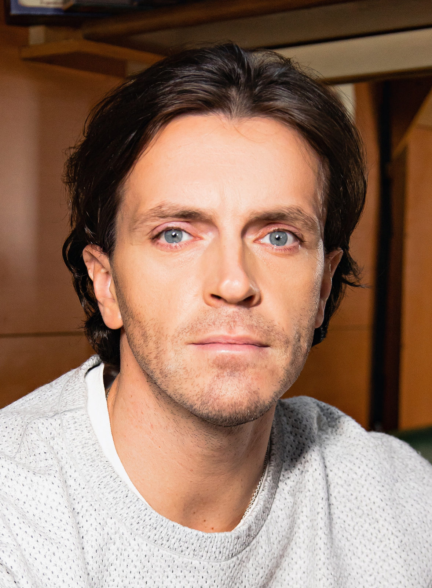

Попов Арсений Сергеевич
«Импровизация — это не просто жанр, а способ жизни. Умение слышать, принимать и развивать любую ситуацию.»
📖 О себе
Попов Арсений Сергеевич родился 20 марта 1983 года в Омске. С ранних лет проявлял творческие способности: участвовал в школьных театральных постановках, конкурсах чтецов и играх КВН, где впервые открыл для себя радость импровизации и взаимодействия с аудиторией.
✨ Увлечения и интересы
Участие в постановках и импровизационных шоу
Съёмки в фильмах и сериалах
Коллекции футболок с отсылками к импровизации
Бег, йога для поддержания формы
Вдохновение в визуальных образах и литературе
Обучение импровизации и сценическому мастерству
Арсений Сергеевич Попов увлекается импровизацией и театром, активно участвует в театральных постановках и импровизационных шоу. Интересуется кино и развивает актёрское мастерство — снимается в фильмах и сериалах. В сфере дизайна запустил собственный бренд одежды «УберитеРыбу»: создаёт коллекции футболок с отсылками к импровизации и работает с визуальными образами и типографикой. Для поддержания формы занимается бегом и йогой, а в свободное время увлекается фотографией и чтением. Также проводит мастер‑классы по импровизации и сценическому мастерству.
📈 Карьерный рост
Начало пути и профессиональное становление
После окончания Омского государственного университета им. Ф. М. Достоевского (факультет культуры и искусств, курс В. С. Решетникова, специальность «Артист драматического театра и кино») Арсений Попов начал профессиональную деятельность в Омске:
- вошёл в труппу Драматического Лицейского театра;
- стал ведущим на местном телевидении — получил опыт работы перед камерой и развил навыки публичных выступлений;
- сотрудничал с Театром пластической драмы «ЧелоВЕК», где освоил язык тела и невербальную коммуникацию — это обогатило его сценический арсенал.
Переезд в Санкт‑Петербург и погружение в импровизацию
Арсений переехал в Санкт‑Петербург, чтобы расширить творческие горизонты, и присоединился к театру импровизации «CraZy». В этот период:
- оттачивал мастерство сценической импровизации;
- участвовал в создании новых форматов живых шоу;
- выступал на фестивалях и гастролировал с труппой;
- начал сниматься в эпизодических ролях в сериалах («Литейный», «Жена по контракту» и др.).
Прорыв: участие в шоу «Импровизация»
Стал участником комедийного шоу «Импровизация» на ТНТ — проекта, построенного исключительно на импровизационных сценах без заранее написанного сценария. Это стало поворотным моментом в карьере:
- получил широкую известность у многомиллионной аудитории;
- сформировал узнаваемый сценический образ;
- закрепил репутацию мастера быстрой реакции и остроумия;
- наладил творческое партнёрство с другими участниками проекта.
Параллельно в 2016 году запустил собственный бренд одежды «УберитеРыбу» — коллекцию футболок с отсылками к импровизации и цитатами из шоу.
Развитие в кино
Расширил актёрское портфолио, снявшись в ряде проектов:
- 2019 — главная роль в короткометражке «Gypsy» (роль Странника);
- 2019 — участие в клипе группы Little Big («I’m OK»);
- 2020 — роль Германа в комедии «Хищники»;
- 2021 — роли в сериалах «Метод Михайлова» (Игорь), «Последний аксель» (Леонид Виноградов, тренер), «Любовь с первого взгляда» (Александр).
Новые форматы
Запустил YouTube‑шоу DreamApp — авторский проект, в котором помогал начинающим сценаристам и авторам презентовать свои киноидеи продюсерам. Формат сочетал элементы наставничества, импровизации и креативного продюсирования, позволив Попову проявить себя в роли медиа‑ведущего и ментора.
Телевизионные проекты в роли ведущего
Успешно расширил амплуа от актёра‑импровизатора до телеведущего:
- 2023 — стал ведущим шоу «Шоу из шоу» на СТС. В программе звёзды соревновались в пародиях на популярные телеформаты — здесь пригодились навыки импровизации и чувство юмора;
- 2024 — возглавил развлекательное шоу «Чудо» на НТВ. Проект ориентирован на раскрытие необычных талантов участников, что позволило Попову проявить эмпатию и умение создавать комфортную атмосферу для гостей.